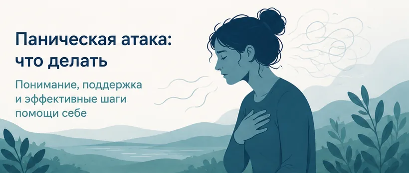
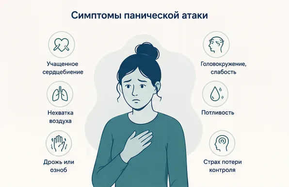
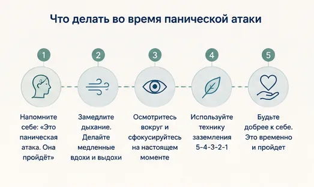
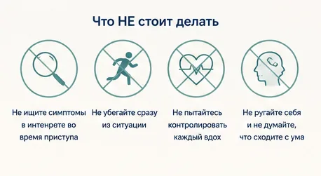
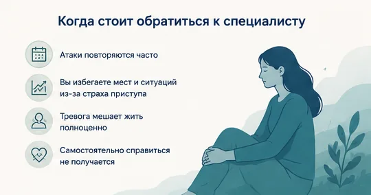

Главная → Блог → Что делать при панической атаке
Паническая атака: что делать в момент приступа — пошаговый алгоритм
Обновлено: 26.06.2026 · 8 минут чтения

Паническая атака ощущается пугающе: сердце колотится, не хватает воздуха, кружится голова, накатывает страх, будто сейчас случится что-то ужасное. Самое важное, что нужно знать с самого начала: паническая атака не опасна для жизни и всегда проходит сама. Это ложная тревога нервной системы, а не реальная угроза. Ниже — что это такое, как пережить приступ по шагам и когда стоит обратиться за помощью.
Это страшно, но не опасно
Во время панической атаки может казаться, что вы задыхаетесь, теряете контроль или умираете. Несмотря на интенсивные ощущения, сама паническая атака обычно не представляет угрозы для жизни и проходит самостоятельно. Организм запускает реакцию «бей или беги» там, где реальной опасности нет — поэтому появляются сильные телесные симптомы, но за ними не стоит настоящая катастрофа.
Это неприятно и пугающе, но это не опасно. Приступ достигнет пика за несколько минут и пойдёт на спад. Вы справитесь. Вы не один.
Как понять, что это паническая атака
Паническая атака — это короткий резкий приступ сильного страха с яркими телесными симптомами. Обычно присутствует несколько признаков сразу:
- сильный, почти беспричинный страх;
- учащённое сердцебиение;
- нехватка воздуха, чувство удушья;
- головокружение или слабость;
- дрожь, озноб или потливость;
- страх умереть или потерять контроль;
- симптомы достигают пика за несколько минут.

Как отличить паническую атаку от инфаркта
Это один из самых частых страхов во время приступа. Полную уверенность даёт только врач, но есть типичные различия:
| Паническая атака | Возможный инфаркт |
|---|---|
| Часто возникает на фоне тревоги | Может возникнуть после физической нагрузки |
| Выраженный сильный страх | Не всегда сопровождается страхом |
| Симптомы постепенно проходят за минуты | Боль может нарастать и не отпускать |
| Ранее уже были похожие приступы | Новые, необычные для вас симптомы |
Что делать прямо сейчас: пошаговый алгоритм
- Напомните себе: «Это паническая атака. Это неприятно, но не опасно. Она пройдёт».
- Замедлите дыхание. Вдох на счёт 4, медленный выдох на счёт 6–8. Длинный выдох успокаивает нервную систему. Не дышите часто.
- Заземлитесь (5-4-3-2-1). Назовите 5 предметов, которые видите, 4 — которых можете коснуться, 3 звука, 2 запаха и 1 ощущение в теле.
- Не убегайте сразу из ситуации. Если можете — останьтесь и дайте волне пройти. Бегство закрепляет страх.

Что НЕ стоит делать
- не пытайтесь судорожно контролировать каждый вдох — это усиливает гипервентиляцию;
- не ищите симптомы в интернете во время приступа;
- не ругайте себя за то, что «не справляетесь»;
- не думайте, что сходите с ума — паника этого не означает.

После приступа многие остаются один на один с мыслями: «Почему это произошло? А вдруг повторится?» Иногда помогает просто спокойно проговорить переживания и получить поддержку — с ИИ-психологом, анонимно и в удобное время.
Начать разговор бесплатноКогда обратиться к специалисту
Разовая паническая атака случается у многих и не означает болезни. Но стоит обратиться к врачу или психотерапевту, если:
- атаки повторяются, и вы начинаете бояться их повторения;
- из-за страха вы избегаете транспорта, людных мест, выходов из дома;
- приступы сильно мешают работе и обычной жизни.

Паническое расстройство хорошо поддаётся психотерапии (особенно КПТ), и с ним можно полностью справиться. Если паника возникает на фоне постоянной тревоги, посмотрите также нашу статью «Как справиться с тревогой: 8 техник».
Частые вопросы
Сколько длится паническая атака?
Обычно от нескольких минут до получаса. Самые сильные ощущения достигают пика за несколько минут, а затем идут на спад.
Можно ли умереть от панической атаки?
Паническая атака ощущается очень пугающе, но сама по себе обычно не представляет угрозы для жизни. Если симптомы появились впервые или вызывают сомнения, стоит исключить другие причины у врача.
Почему панические атаки возникают ночью?
Ночные приступы связаны с повышенной тревожностью и накопленным за день стрессом. Помогают спокойный вечерний ритуал без экранов и дыхательные техники.
Паническая атака может повториться?
Да. Именно страх повторения часто поддерживает цикл тревоги. Разорвать этот круг помогает психотерапия.